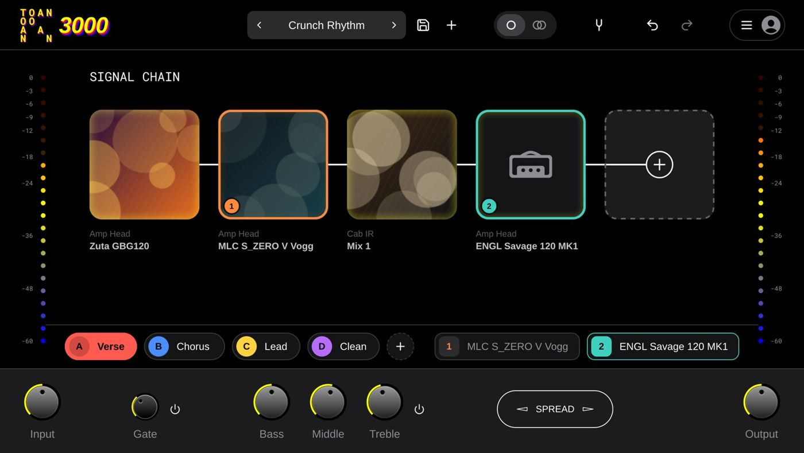
T3KJ is Jon's build of the free, open-source TONE3000 plugin: NAM captures and impulse responses in a signal chain, plus My Gear, scenes, footswitches, a split channel strip, skins and cover art.
T3KJ loads NAM captures (amps, pedals, full rigs) and IRs (cabinets, rooms) as blocks in a signal chain. A NAM capture is a snapshot of real gear at the knob settings it was captured with: to change the amp's knobs, load another capture (a "tone" can hold several, one per setting) or shape it with the block EQ and the faceplate.
.nam / .wav file (or a folder) onto it.| Feature | What it does |
|---|---|
| My Gear | Your own captures and IRs from a folder on your computer, with Recent and Pinned, shown before the TONE3000 search (section 3). |
| Scenes | Up to eight versions of the preset (A to H): which blocks are on, their levels and EQ, and the faceplate (section 8). |
| Footswitches | Group blocks on switches 1 to 8 that turn them on and off together (section 8). |
| Split strip | With two chains, lane 2 gets its own Input, Gate, tone stack and Output (section 6). |
| Skins, art, notes | Seven looks, your own cover art for local tones, block labels, and notes per tone (section 11). |
| Scene parameter | REAPER can automate scene changes from the timeline (section 10). |
T3KJ updates itself with TONE3000's changes every night, so new features from the official plugin arrive here too.
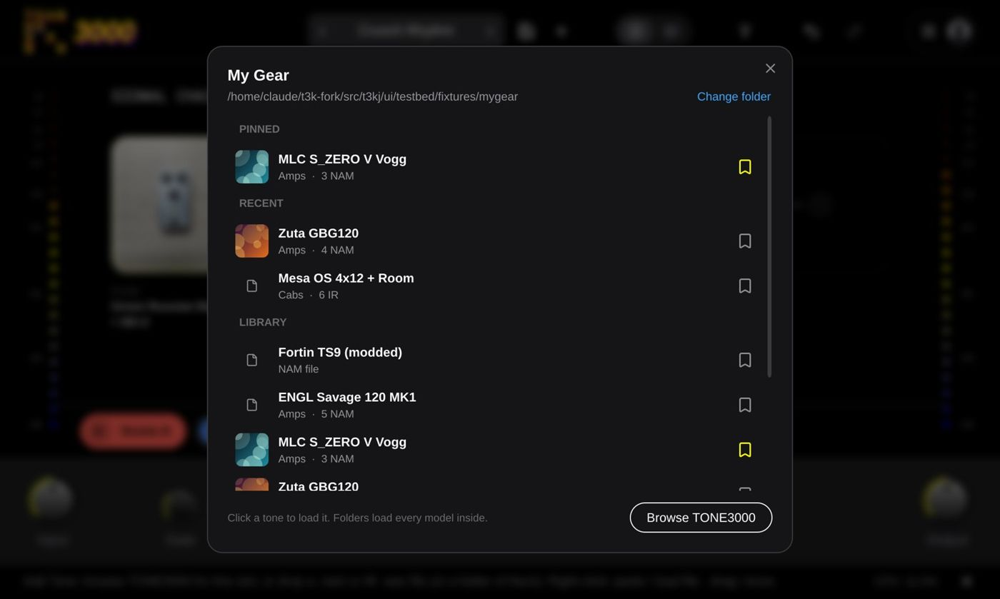
My Gear: Pinned, Recent and your Library. Browse TONE3000 is at the bottom.
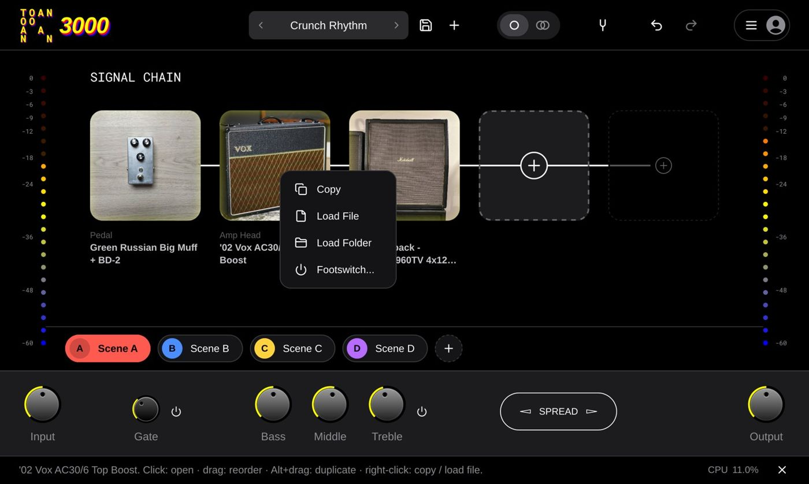
Right-click a block: Copy, Load File, Load Folder, Footswitch (Set Art for local tones).
Click + (or a block's swap button) and My Gear opens first. Change folder points it at the folder where you keep captures (subfolders included, three levels deep). Every folder that holds .nam or IR .wav files shows up as one tone with all its models; loose files show on their own. Pin favourites with the bookmark; Recent fills itself. Browse TONE3000 switches to the online search. (Settings → Open My Gear First turns this off.)
Sign in once (☰ → Login: a browser page, or a code on your phone). Search by title, gear, tags or creator; filter by gear type, format (NAM / IR), makes, creators, verified creators or calibrated; or open your Profile for Recently used, Favorites and your own uploads. Pick a tone and it lands in the slot.
Drag a .nam (A2), an IR .wav, or a folder of them onto a + slot, or right-click → Load File / Load Folder. No account needed. A folder becomes one block with every model inside it.
| Do this | To |
|---|---|
| Click a block | Open its card (levels, EQ, model). |
| Drag a block | Move it in the chain. Alt-drag duplicates it. |
| Right-click → Copy, then right-click a + → Paste | A copy with every setting. |
| Swap (in the card) | Replace the tone, keep the slot. |
| Right-click → Set Art | Your own JPG / PNG as the tile's art (local tones; saved next to the files). |
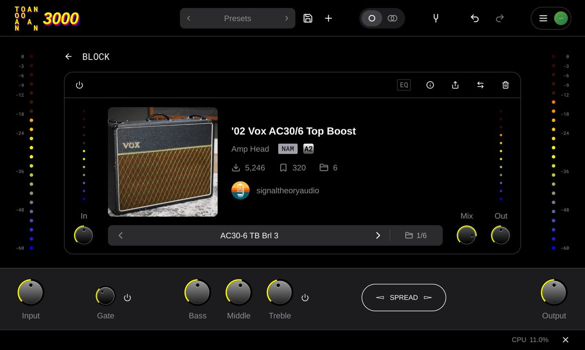
A capture's card: the model picker (‹ AC30-6 TB Brl 3 › and 1/6) switches between the models in this tone.
| Control | What it does |
|---|---|
| Power | Bypass this block (top left of the card, or a footswitch / scene). |
| In / Out | Level into and out of the block, ±24 dB. Out comes after the Mix, so it moves the whole blend. |
| Mix | Dry against wet: lower blends the block's input back in (handy on IRs and reverb-like captures). |
| Model picker | ‹ › steps through the captures in this tone (each is the gear at different settings); the folder icon lists them. |
| EQ | A 6-band EQ on the wet signal. PRE puts it before the capture (changes how it distorts), off = after. Sliders view for gains, Curve view to drag bands (scroll = width, Alt-click = reset). An outlined EQ button means it's shaping the sound. |
| Info (i) | The tone's description, makes and tags, plus your own label and notes (local tones keep them in a tk3j.json beside the files). |
| Normalize | Levels the block's loudness so captures sit at a similar volume (Settings → Per-Block Normalization shows it). |
| NAM size | LITE saves CPU, FULL is the most accurate (Settings → Per-Block NAM Size shows it). |
Calibration: captures made with calibration data set their own input level from your interface's dBu (Settings → Calibration). Uncalibrated ones use Normalize instead. If you're not sure, leave both at their defaults.
The bottom row works on the whole chain. Its knobs (all but Pitch) are also part of each scene (section 8).
| Control | What it does |
|---|---|
| Input | Level into the chain. With a stereo input, its menu picks how the two channels enter: Stereo SUM, Stereo (channel 1 → Left chain, 2 → Right), Dual Mono (L and R each run the chain; twice the CPU), Left or Right only. |
| Gate | Noise gate threshold (−100 to 0 dB) and power. Right-click for Release (5–500 ms), Hold (0–200 ms) and Range (20–80 dB; 80 = full mute). |
| Pitch Shift | Transposes the DI before the amp, ±24 semitones: −2 plays drop D on a standard-tuned guitar. Off by default and hidden until Settings → Show Pitch Shift. On adds latency (11–31 ms, reported to REAPER). Right-click: STEP (whole semitones; off = smooth whammy sweep), Tonality (highs above it stay unshifted, keeps the pick natural), Buffer (shorter = less latency, longer = cleaner lows). Pitch is not per scene. |
| Bass / Middle / Treble | Global tone stack after the chain: ±20 dB at 150 Hz, ±15 dB at 425 Hz, ±10 dB at 1.8 kHz; 5 = flat. Its power switch bypasses it. |
| Spread | Mono chain only: turns it into a wide double-tracked stereo sound with a short, wobbling delay on one side. Right-click for Wobble, Crossover (keeps the lows mono) and Diffuse. The mono-safety light warns if it would cancel on a mono sum. |
| Output | Master level, ±24 dB. |
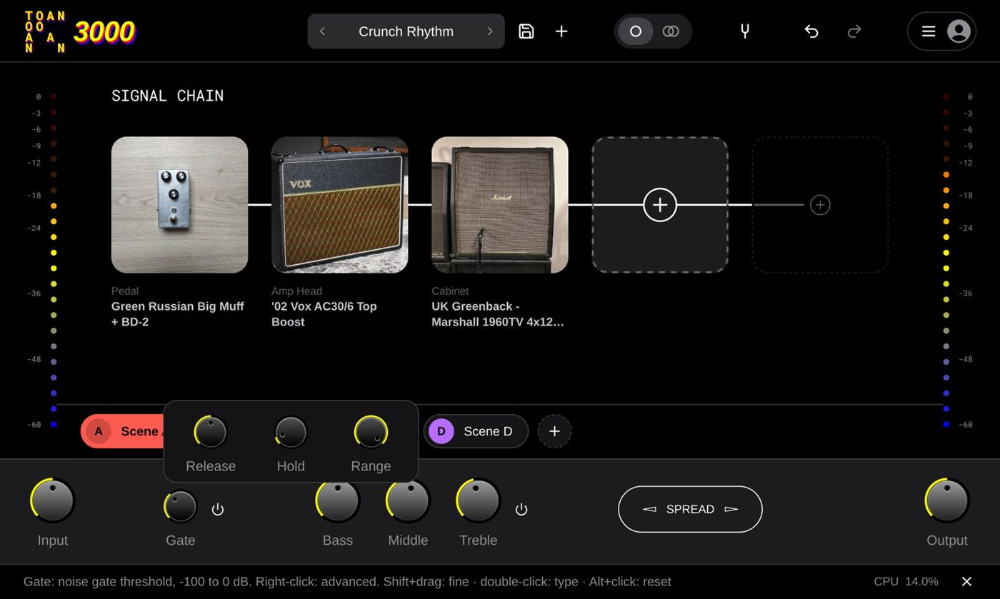
Gate's advanced deck (right-click the Gate).
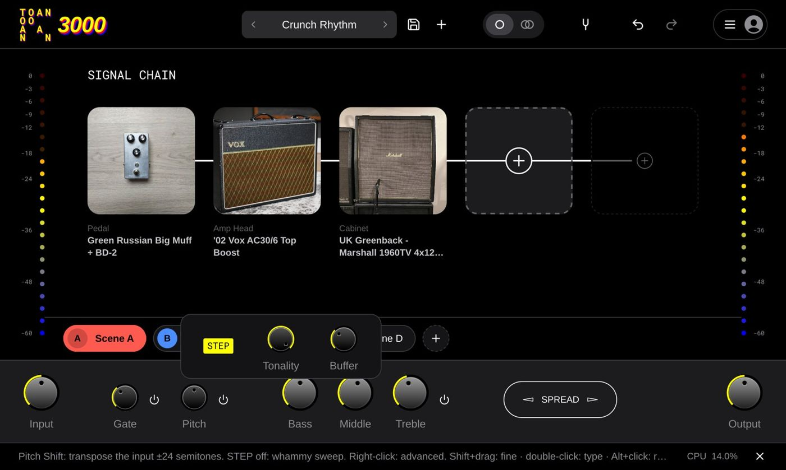
Pitch Shift's deck: STEP, Tonality, Buffer.
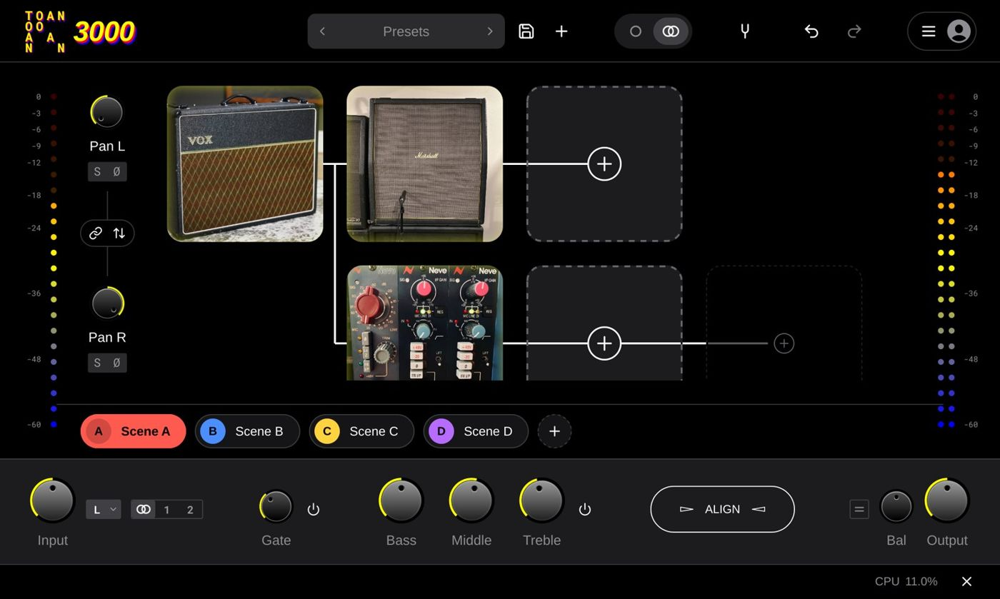
Stereo mode with the Right chain branching off the Left one after the amp.
| Control | What it does |
|---|---|
| Stereo | The header switch: a Left and a Right chain, each with its own blocks. Mono runs only the Left chain to both outputs. |
| Branch | Click the gap after a block: the other chain starts from that point (one amp into two cabs, say). Click the branch point to make the chains independent again. |
| Pan L / R, Link | Where each chain sits; Link mirrors them. |
| Solo, Ø | Hear one chain alone; flip a chain's polarity if the two sound hollow together. |
| Balance, Auto | Trims the chains against each other (±12 dB). Auto: play for about 2 s and it matches their levels. |
| Align, Auto | Delays one chain up to 24 ms when captures carry different latency. Auto runs a half-second sweep and also fixes flipped polarity. |
| Swap | Exchange the Left and Right chains. |
| Split strip | With two lanes running (stereo or dual mono), the lane buttons split the faceplate: lane 2 gets its own Input, Gate, tone stack and Output. Click lane 1 / lane 2 to choose which one the knobs edit. |
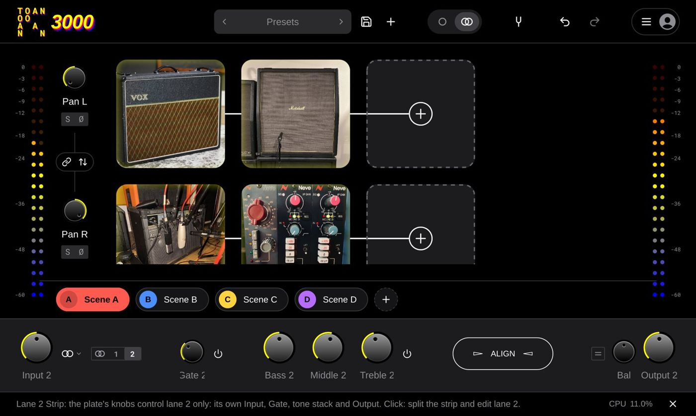
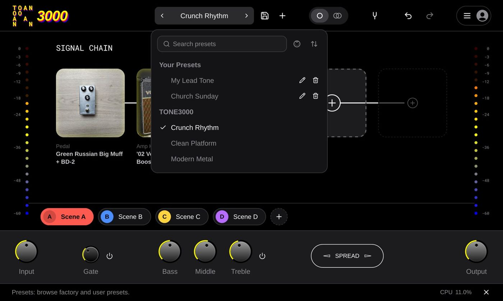
A preset is the whole chain (every block, its model and settings, with the captures embedded so it loads offline), the faceplate, and all of its scenes. It leaves out what belongs to your rig: calibration, oversampling, solo, input mode, the MIDI map and the window size.
| To | Do this |
|---|---|
| Save | Disk icon, type a name. The same name overwrites: that's how you edit a preset. |
| Start from scratch | + (New) clears the chain and resets every control. Save first if you want to keep what you had. |
| Browse / rename / delete | Click the preset name. |
| Reorder | Drag presets in the browser. Prev / Next and MIDI follow the order. |
| See PC numbers | Turn on MIDI PC in the browser: each preset shows the Program Change that loads it. |
Presets are plain files: Settings → Presets → Open presets folder. Copy them to back up or move to another computer.
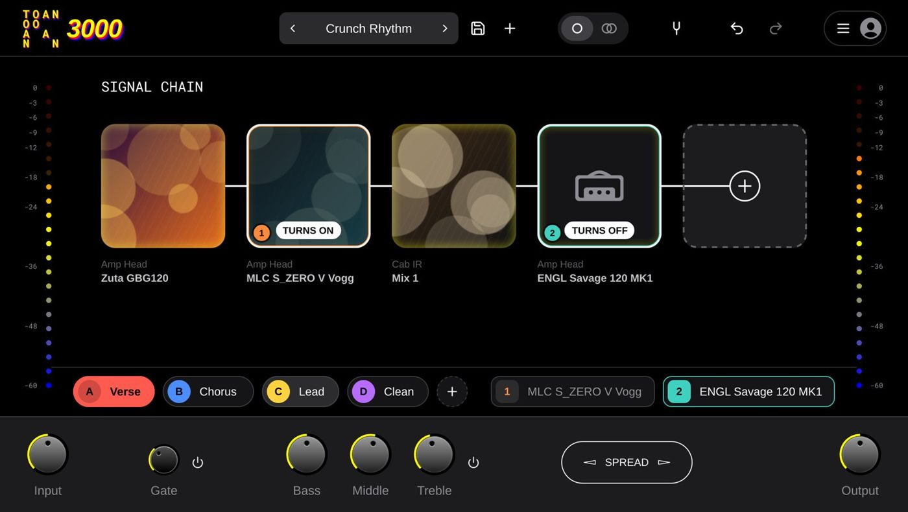
Hovering a scene marks the blocks it would turn on or off.
A scene is a version of the preset: for every block its power, In, Out, Mix and EQ, plus the faceplate (Input, Gate, Bass / Middle / Treble, Spread, Output, Balance). Not in scenes: Pitch (tuning stays put) and which capture a block has loaded (load the amps you want as separate blocks and turn them on per scene, like the "Amp Testing" setup). There's no save step: whatever you change in a scene is what that scene keeps, and scenes save with the preset.
| To | Do this |
|---|---|
| Switch | Click a scene. Switching is instant: no capture reloads. |
| Add | + after the last scene, up to 8 (A to H). It starts as a copy of the one you're in. |
| Name | Double-click it (or right-click → Rename). |
| Delete | Right-click → Delete. Later scenes move up a letter. Undo brings it back. |
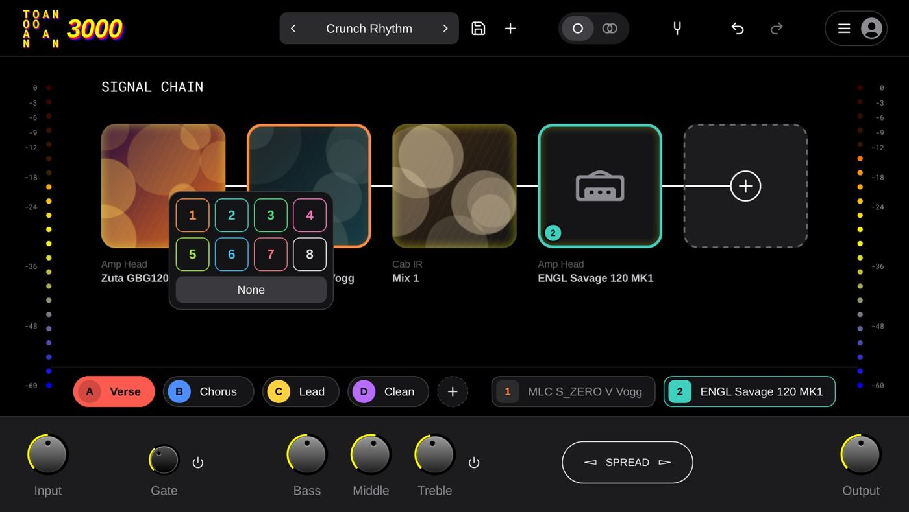
Right-click a block → Footswitch… and pick 1 to 8. Every block on the same switch turns on and off together, and the switch shows as a chip next to the scenes (click it to stomp). Use footswitches for things you kick in during a scene (a boost, a delay); use scenes for whole changes.
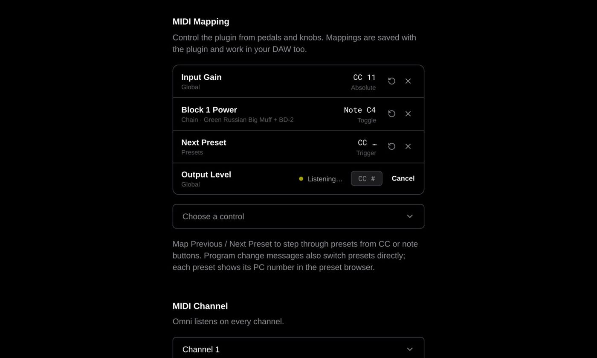
☰ → Settings → MIDI Mapping: Choose a control, then move the knob / press the switch on your controller (or type its CC). Mappings save with the plugin and in your REAPER project. In the standalone app, tick your controller under MIDI inputs first.
| Target | How it responds |
|---|---|
| Program Change | No mapping needed: PC n loads the preset at position n in the list (PC 0 = the first). |
| Scene (value 0–7 = A–H) | The CC's value picks the scene: 0 = A, 1 = B… Values past the last scene are ignored. Reliable for automation: the value always says which scene. |
| Footswitch 1–8 | Each press flips the switch (on ↔ off). A momentary QC switch (127 then 0) flips once per stomp. |
| Block N Power | Flips that block on / off per press. |
| Knobs and power switches | Follow the CC value (an expression pedal on Pitch makes a whammy). |
| Previous / Next Preset | Step through the list. |
Faceplate controls and the Scene parameter are REAPER parameters, so they can be drawn as envelopes, no MIDI needed. Blocks themselves aren't parameters (the chain changes from preset to preset), so to turn blocks on and off over a song, put them in scenes and automate the scene.
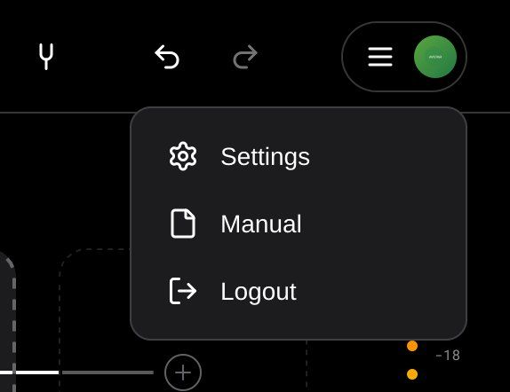
| Setting | What it does |
|---|---|
| Show Info Bar | The hint bar at the bottom. |
| Show Gate / Pitch Shift | Which effects the faceplate shows (one that's switched on always shows). |
| Fit Chain to Window, Show Block Labels | Chain layout and the gear / name labels under each tile. |
| Show Scene Bar, Open My Gear First | The scene row; My Gear before the TONE3000 search. |
| Skin | Stock, Zenith, Tidal, Inferno, Ironwave, Hologram, Gilded. The look only: sound and presets don't change. |
| NAM A2 Size | A2-Lite (less CPU, sounds great) or A2-Full (most accurate) for new blocks; Per-Block NAM Size shows the switch on each card. |
| Calibration | Your interface's input level (dBu) for calibrated captures. |
| Oversampling | Runs the chain at 2×, 4× or 8× to cut aliasing (smoother highs on high gain). No added latency; more CPU. |
| Multi-Core Processing | Spreads the chains across CPU cores. Same sound either way. |
| Presets, Diagnostics | Open the presets folder; copy logs for a bug report. |
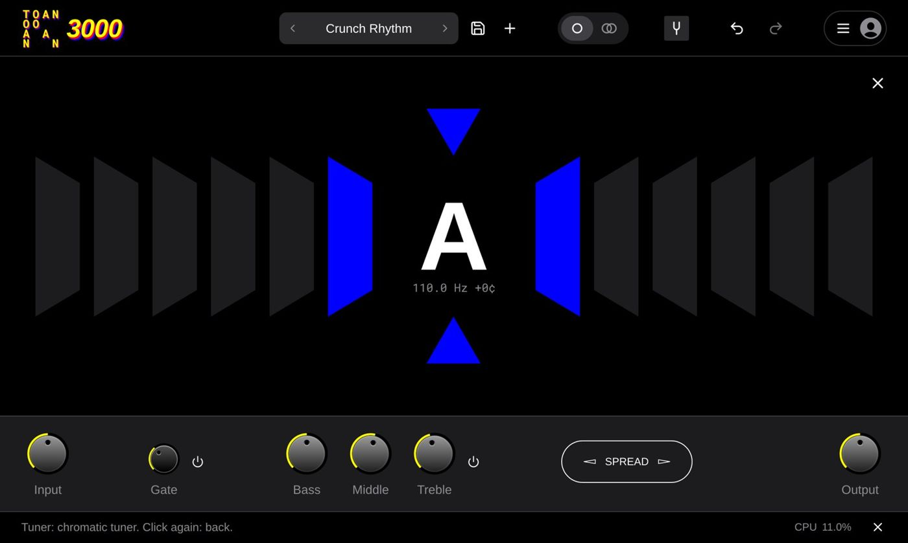
Tuner: the fork icon in the header. Play one open string; click again to go back.
Where things live: presets, settings and UI preferences in %APPDATA%\TONE3000 (shared with the official plugin); My Gear, scene-bar and skin choices per computer; cover art and notes for local tones next to their files (tk3j.json); this manual in C:\Program Files\T3KJ\docs.
| Problem | Try this |
|---|---|
| REAPER doesn't list T3KJ, or lists TK3J | Re-scan VST3. TK3J was the old name; the installer removes it. Use T3KJ (the "T3 over knobs" icon). |
| No sound in the standalone app | ☰ → Settings: input device and channels, outputs, and turn off the input mute (the banner says when it's muted). |
| A scene switch doesn't change something | Pitch and the loaded captures aren't part of scenes. For a different amp per scene, load each amp as its own block and turn them on per scene. |
| The QC loads the wrong preset | PC n = the nth preset in the browser's order (turn on MIDI PC to see the numbers). Match the order in dJONt. |
| A footswitch is "backwards" | Footswitch and block power targets flip per press; stomp it once to resync, or use scenes for anything that must be exact. |
| Crackles / high CPU | Bigger buffer, A2-Lite, oversampling off, Multi-Core on. Dual Mono doubles the amp CPU. |
| Everything feels late | Pitch Shift adds latency while it's on; turn it off or shorten its Buffer. |
| Two chains sound thin together | Flip one chain's Ø, or use Auto Align. |
| Something else | Settings → Diagnostics → Copy Logs, and paste them to Claude. |